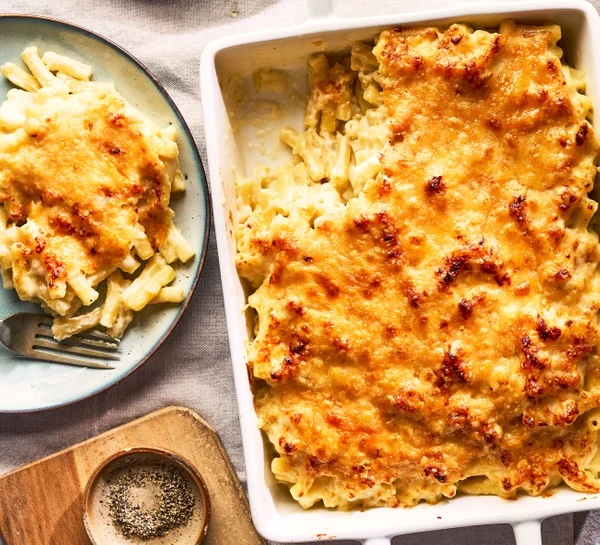

Mac & Cheese

A recipe for a deliciously cheesy mac and cheese!
Ingredients
- 50g baguette, cut into chunks
- 3 tbsp butter
- 350g pasta (preferably macaroni)
- 2 garlic cloves, finely chopped
- 3 tbsp flour
- 500ml whole milk
- 300g cheddar cheese
- 100g parmesan / parmigiano
Method
- Pre-heat the oven to 200c and spread the chunks of bread on a baking tray with a drizzle of olive oil
- Boil the pasta for five minutes less than the packet recommends and drain, putting to one side
- Melt the butter in a saucepan along with the garlic, bringing to a simmer. Once simmering, reduce to a medium heat and add the flour
- Whisk until a thick paste forms, then gradually add in the milk until you have a thick roux. Keep whisking to prevent lumps.
- Remove from the heat and gradually add the cheddar cheese until melted. Return to a low heat occasionally if necessary.
- Add half of the parmesan, and then stir in the pasta.
- Scatter over the bread and bake in the oven for 15 minutes.
- Add the remaining parmesan to the top and return to the oven for five minutes, then serve!